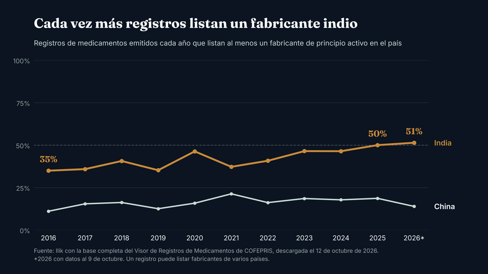
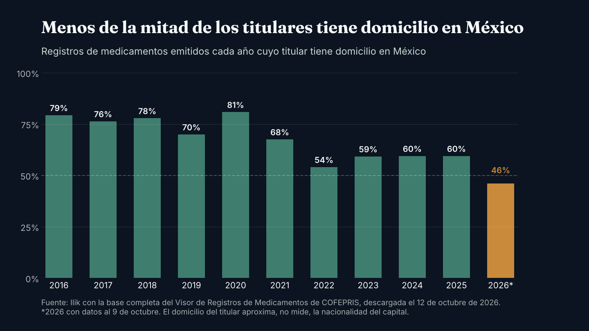

Observatorio / Medicamentos y COFEPRIS
InvestigaciónHecho en México, con molécula de India
La mitad de los registros de medicamentos que hoy se emiten en México lista al menos un fabricante indio de principio activo; hace una década era un tercio. Y por primera vez, menos de la mitad tiene un titular con domicilio en México.
Una tableta puede formularse, comprimirse y empacarse en México y ser, con todas las de la ley, mexicana. Su principio activo, la sustancia que la hace funcionar, cuenta otra historia: casi siempre se importa, y cada vez más llega de India.
Que se importe no sorprende a nadie. Lo que sorprende es lo rápido que ha cambiado.
En 2016, 35 de cada 100 registros de medicamentos emitidos en México listaban al menos un fabricante de principio activo en India. En 2025 fueron 50, y en lo que va de 2026, 51. Lo medimos en la base completa del Visor de Registros de Medicamentos de COFEPRIS: 14,949 registros, incluidos los cancelados y revocados, descargados el 12 de octubre de 2026.1

El segundo cambio pesa más. En 2016, 79% de los registros emitidos tenía un titular con domicilio en México, es decir, una empresa establecida aquí que responde por el medicamento ante la autoridad. En 2026, con el año todavía abierto, esa proporción va en 46%. Es la primera vez en la década que medimos que queda por debajo de la mitad.
Hasta 2021 se había mantenido siempre por encima de dos tercios. Desde 2022 no ha vuelto a pasar de 60%.

Descartar el espejismo
La base tiene una trampa: un registro viejo que se reemite puede cambiar de fecha y pasar por nuevo. Por eso repetimos el cálculo solo con los registros que realmente nacieron cada año. La tendencia aguanta. La presencia de India sube de 42% en 2016 a 56% en 2025 y 55% en 2026, y el titular con domicilio en México baja de 77% a 46%.
China se movió menos: 11% en 2016, 19% en 2025 y 14% en 2026.
Lo que entra es, sobre todo, genérico: tres de cada cuatro registros emitidos en 2025 y 2026. Y la propiedad está muy repartida. Los 10,097 registros vigentes pertenecen a 1,154 titulares, y los diez más grandes apenas suman 15%.
Se abre el registro, se cierra la compra
La regulación sanitaria lleva años abriéndose. En noviembre de 2008, una reforma al Reglamento de Insumos para la Salud dejó de exigir planta en México para registrar e importar medicamentos.2 A partir de 2012, los acuerdos de equivalencia permitieron a COFEPRIS apoyarse en las aprobaciones de la FDA, la Comisión Europea, Health Canada y otras agencias.3 En noviembre de 2020, un decreto presidencial buscó acelerar todavía más el registro de medicamentos ya aprobados en el extranjero.4 Y en julio de 2025, COFEPRIS publicó los lineamientos de una vía abreviada que sustituyó aquellos acuerdos: se apoya en las evaluaciones de autoridades de referencia y fija un plazo máximo de 45 días hábiles.3,5 Cada paso hizo más fácil registrar aquí lo que ya se había aprobado afuera.
No hay una cifra pública de cuántos registros entraron por cada vía, así que no podemos atribuir el cambio a una sola regla. Lo que sí sabemos es que el quiebre de 2022 llegó después de una década de equivalencias y del decreto de 2020.
La compra pública camina en sentido contrario. En mayo de 2025, el gobierno anunció que en las compras consolidadas de 2027 y 2028 daría preferencia a los laboratorios que fabriquen o inviertan en México.6 La convocatoria de Birmex para ese periodo, publicada en julio de 2026, pide que los bienes sean de origen mexicano o de países con los que México tiene tratados que cubren la licitación, como los del T-MEC, la Unión Europea o Japón.7 India y China no tienen un tratado de libre comercio con México. Como está descrita, la regla deja fuera su producto terminado, pero no su principio activo dentro de una tableta hecha aquí.
Muchas denuncias, pocos números
La Asociación Mexicana de Laboratorios Farmacéuticos (AMELAF), que agrupa a laboratorios de capital mexicano, denunció en junio de 2025 que laboratorios extranjeros, entre ellos indios, ofrecen precios que los fabricantes nacionales no pueden igualar, “en algunos casos incluso por debajo del costo de las materias primas”.8 Un año después celebró la restricción por tratados en la compra 2027 y 2028, y habló de proveedores indios que no entregaron o que entregaron producto de mala calidad.9
Es un testimonio fuerte, pero viene de una parte interesada y no trae cifras verificables.
Los datos duros por país escasean. En la compra consolidada de dispositivos médicos para 2025 y 2026, según el Instituto Farmacéutico (INEFAM), una consultora del sector, la industria mexicana obtuvo 465 millones de piezas, China 189 millones e India 18 millones.10 Para medicamentos no encontramos un desglose por país de origen publicado en forma verificable.
¿Se está encogiendo el mercado? Lo que cayó fue la compra pública. De enero a agosto de 2025, IMSS e ISSSTE compraron 13% menos piezas de medicamentos que un año antes, también según INEFAM, en un año en que se anularon licitaciones de alto volumen.11 Para el mercado completo no hay una serie reciente de unidades. La encuesta más reciente del INEGI con la industria registra ventas por 537 mil millones de pesos en 2022, incluidos medicamentos veterinarios y dispositivos médicos.12
El fabricante nacional no parece estar en retirada. Formula aquí, con molécula de fuera: la Cámara Nacional de la Industria Farmacéutica (CANIFARMA) calcula que México importa cerca de 80% de sus principios activos, sobre todo de India y China.13
El riesgo que no sale en la factura
Concentrar el abasto en pocos países ya salió caro en otras partes.
En marzo de 2020, al arrancar la pandemia, India restringió la exportación de 26 principios activos y medicamentos, entre ellos el paracetamol.14 En noviembre de 2022, tras una inspección de la FDA que encontró documentos destruidos, la farmacéutica Intas cerró su planta cerca de Ahmedabad, que surtía más de la mitad del cisplatino y el carboplatino genéricos de Estados Unidos.15 A finales de mayo de 2023, 93% de los centros oncológicos encuestados por la red NCCN reportaba desabasto de carboplatino.16
Y hay una capa más abajo. Según la Farmacopea de Estados Unidos (USP), 41% de los materiales de partida clave de los principios activos aprobados en ese país tiene a China como única fuente.17 Comprarle a India no libra a nadie de depender de China.
En México, las fuentes que revisamos no ligan ningún desabasto a esa dependencia. El colectivo Cero Desabasto contó más de 24 millones de recetas no surtidas en el sector público en 2021, el triple que en 2019, y lo sitúa entre el cambio del modelo de compra pública y la pandemia.18 Del sector privado no encontramos una medición pública.
Lo que cambia para quien compra
Para un director de compras hospitalarias, saber quién es el titular de un registro ya dice poco. Lo que importa es dónde se fabrica la molécula y cuántas fuentes alternativas tiene. Dos productos de laboratorios distintos pueden salir de la misma planta en India.
Hay algo que todavía no podemos medir. Si la compra pública le cierra la puerta al producto terminado indio y chino, es razonable esperar que busque lugar en el canal privado.
Falta saber si este cambio ya llegó a los anaqueles. Y queda la pregunta que le importa a quien paga: si la molécula sale más barata en origen, ¿quién se queda con la diferencia?
De eso trata la segunda entrega de esta serie.
Nota metodológica
Un registro sanitario no es un producto vendido: la base de COFEPRIS no tiene volúmenes ni precios. Contamos un registro como “con fabricante indio” cuando lista al menos un fabricante de principio activo con domicilio en India; un mismo registro puede listar fabricantes de varios países. El domicilio del titular aproxima, no mide, la nacionalidad del capital. Los datos de 2026 llegan al 9 de octubre. Para separar registros nuevos de reemisiones usamos el año incluido en el número de registro. Aun así, la base muestra 349 registros nacidos en 2025, contra los 312 que COFEPRIS informó haber otorgado ese año19; por eso trabajamos con proporciones y no con conteos.
Fuentes
- COFEPRIS. Visor de Registros de Medicamentos, base completa descargada el 12 de octubre de 2026. Ver en registros.cofepris.gob.mx ↩
- Milenio, reproducido por Salud y Fármacos. "México. Abren frontera a medicinas", 5 de noviembre de 2010. Ver en saludyfarmacos.org ↩
- Garrigues. "México: nuevos criterios para el reconocimiento de equivalencia de registros sanitarios de medicamentos", 2025. Ver en garrigues.com ↩
- El Financiero. "AMLO publica decreto para agilizar la importación de medicinas en México", 11 de noviembre de 2020. Ver en elfinanciero.com.mx ↩
- Consultorsalud. Lineamientos de la vía regulatoria abreviada de COFEPRIS, 22 de julio de 2025. Ver en consultorsalud.com.mx ↩
- Expansión Política. "Gobierno privilegiará en licitaciones a las farmacéuticas con plantas en México", 29 de mayo de 2025. Ver en politica.expansion.mx ↩
- Consultorsalud. "Compra consolidada de medicamentos 2027-2028: Birmex publica la convocatoria internacional", 24 de julio de 2026. Ver en consultorsalud.com.mx ↩
- Columna Digital, reproducido por Salud y Fármacos. "Industria farmacéutica mexicana en desventaja frente a extranjeras subsidiadas: Amelaf", 1 de junio de 2025. Ver en saludyfarmacos.org ↩
- Yahoo Noticias. "AMELAF celebra que compra consolidada de medicamentos sea bajo tratado comercial", 19 de julio de 2026. Ver en es-us.noticias.yahoo.com ↩
- Expansión Política. "Después de México, EU y China ganan más contratos en compra de medicamentos", 30 de enero de 2025 (análisis de INEFAM). Ver en politica.expansion.mx ↩
- El Universal. Enrique Martínez Moreno (INEFAM), "Avance de la compra pública 2025 y expectativas 2026: medicamentos y dispositivos médicos", 2025. Ver en eluniversal.com.mx ↩
- INEGI y CANIFARMA. Encuesta Nacional de la Industria Farmacéutica (ENIFARM) 2023, comunicado de prensa. Ver en inegi.org.mx ↩
- El Financiero. "México tardará 20 años en sustituir importaciones farmacéuticas", 9 de mayo de 2025. Ver en elfinanciero.com.mx ↩
- PharmTech. "Indian Government Restricts Export of APIs and Formulations Due to COVID-19", 6 de marzo de 2020. Ver en pharmtech.com ↩
- KFF Health News. "Drugmakers Are Abandoning Cheap Generics, and Now US Cancer Patients Can't Get Meds", 21 de junio de 2023. Ver en kffhealthnews.org ↩
- OncLive. "Majority of US Cancer Centers Report Shortages of Cisplatin, Carboplatin Chemotherapy", 7 de junio de 2023. Ver en onclive.com ↩
- USP Quality Matters. "Concentrated origins, widespread risk: new USP insights on key starting materials", 14 de octubre de 2025. Ver en qualitymatters.usp.org ↩
- Expansión Política. "Recetas sin surtir se triplican con AMLO, dice Cero Desabasto", 7 de marzo de 2022. Ver en politica.expansion.mx ↩
- COFEPRIS, comunicado 38/2025, reproducido por Salud y Fármacos, Boletín Fármacos de febrero de 2026. Ver en saludyfarmacos.org ↩

Fundador de Ilik. Estadístico de formación, con más de ocho años al frente de la inteligencia comercial del canal hospitalario privado en la industria farmacéutica.